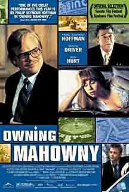
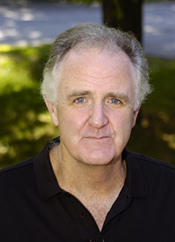

#1459 Nichts geht mehr - Das Millionenspiel des Dan Mahowny
Alternativ: Owning Mahowny
 
 IMDB-Wertung: 7.1 / 10
IMDB-Wertung: 7.1 / 10  Metascore: 70
Metascore: 70 
Toronto in den frühen 80er Jahren: Der stille und unscheinbare Bankangestellte Dan Mahowny (Philip Seymour Hoffman) ist ein Workaholic und arbeitet sich in kürzester Zeit zum Star der Finanzwelt der Metropole hoch. Bei seinen Kollegen und Vorgesetzen gilt er als so verlässlich, dass er schnell frei über Kredite und größere Geldsummen entscheiden kann. Nicht einmal seine Freundin Belinda (Minnie Driver) ahnt allerdings, dass Mahowny seit frühester Jugend krankhaft spielsüchtig ist und das Geld der Banken in den Casinos der amerikanischen Spielerstadt Atlantic City verzockt, in der er regelmäßig die Nächte an den Spieltischen verbringt…
Jahr: 2003
Dauer: 104 Minuten
FSK: 0
Land: Kanada Studio: Red PlanetTonspuren:
Untertitel:
Auflösung: 720p (1280x720) Größe: 4474 MB
Genre: Krimi, Thriller, Drama
Regisseur: Richard Kwietniowski
Drehbuch: Gary Stephen Ross, Maurice Chauvet
Soundtrack: Richard Grassby-Lewis, The Insects
Darsteller:
 Philip Seymour Hoffman als Dan Mahowny
Philip Seymour Hoffman als Dan Mahowny Minnie Driver als Belinda
Minnie Driver als Belinda John Hurt als Victor Foss
John Hurt als Victor Foss Maury Chaykin als Frank Perlin
Maury Chaykin als Frank Perlin Ian Tracey als Det. Ben Lock
Ian Tracey als Det. Ben Lock- K.C. Collins als Bernie
 Jason Blicker als Dave Quinson
Jason Blicker als Dave Quinson- Vince Corazza als Doug
- Philip Craig als Briggs
- Matthew Ferguson als Martin
 Steve Cumyn als Observer #1
Steve Cumyn als Observer #1- M.J. Kang als Secretary
- Karen Robinson als Cage Woman
- Conrad Dunn als Edgar
- Judah Katz als Broker
- Carmela Albero als Quinson's Mother
- Matthew MacFadzean als Office Cop
- Paul Hubbard als Vegas Casino Manager
 Ted Ludzik als Vegas Security Guard
Ted Ludzik als Vegas Security Guard Russell Yuen als Auditor
Russell Yuen als Auditor- Demetrius Joyette als Boy
 Joe Pingue als Plain Clothes Cop
Joe Pingue als Plain Clothes Cop- Alex Poch-Goldin als Investigator #1
- Joseph Scoren als Investigator #2
 Sandra Oh als Craps Player , uncredited
Sandra Oh als Craps Player , uncredited- Sonja Smits als Dana Selkirk
-  Roger Dunn als Bill Gooden
- Eric Fink als Psychologist
- Mike 'Nug' Nahrgang als Parking Attendant
- Tanya Henley als Teller
- Brona Brown als Teller
 Michael Caruana als Alex Retsnor
Michael Caruana als Alex Retsnor- Gary Brennan als Man in Ice Rink
- Tannis Burnett als Mary the Teller
 Tony Munch als Observer #2
Tony Munch als Observer #2- Lorn Eisen als Blackjack Dealer
- Janine Theriault als Maggie
- Lina Giornofelice als Hot Date Teller
- Jim Aldridge als Customs Officer
- Lani Billard als Tori the Teller
- Carol Anderson als Securities Clerk
- Sherry Hilliard als Prostitute
- Nicco Lorenzo Garcia als New Observer Recruit
- Keith Knight als Surveillance Operator
- Dennis Mirkovic als Vegas Floorman
 David Collins als Private Investigator
David Collins als Private Investigator- Tony Stellisano als Vegas Stickman
- James McGrath als Old Man on the Piano
- Darren McGuire als Guy Pulled by Zamboni
- Linda Goranson als Belinda's Mother
Datei: X:\2003(N-Z)\Nichts geht mehr - Das Millionenspiel des Dan Mahowny (2003, FSKo.Al., 1280x720).mkv seit 07.07.2015
Festplatte: HD 2003-2004-2005(A-F)
 Es gibt insgesamt 46 Filme in der Gruppe '2003(N-Z)'
Es gibt insgesamt 46 Filme in der Gruppe '2003(N-Z)'